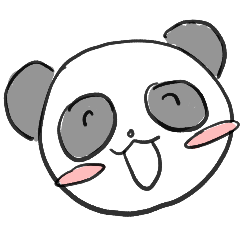
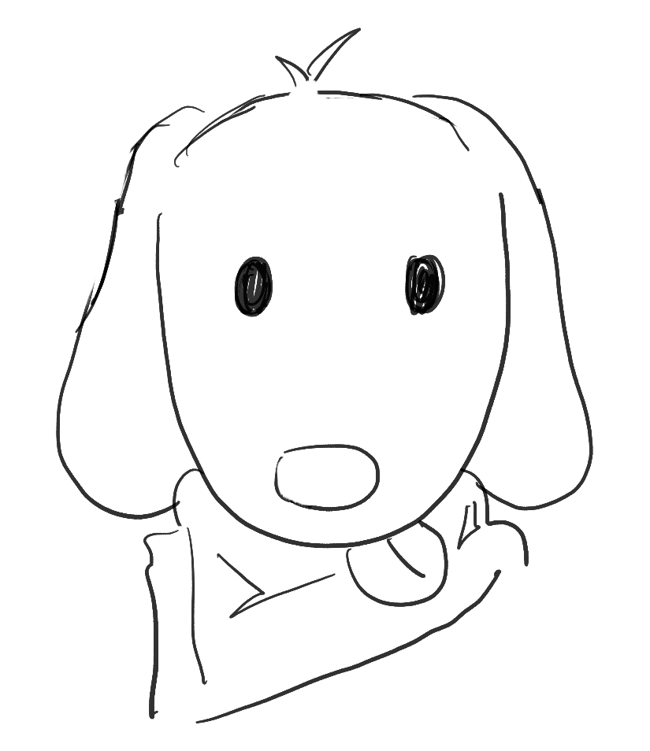
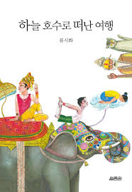

인간관계 꿀팁 같은 거 있으신가요?
경청하는게 되게 중요한 거 같아요. 너무 어떻게 보면 당연한 이야기인데 남의 이야기 들어주는 게 생각보다 힘들더라고요.
그리고 저는 남에게 이야기할 때는 부정적인 얘기는 배제하려고 하는 것 같아요.
그리고 평소에는 상대방의 관심사 이런 거를 먼저 끌어내려고 해요.

어떻게 보면 자연스러운 것보다는 신경을 써서 말하려고 하는 거죠.
20대 때는 그렇게 못 했을 수도 있는데, 지금 보면 상대방이 주가 되는 게 중요하다고 생각해요.
상대방에게 공감해 주고, 비슷한 경험을 이야기하고, 경험이 없으면 대조적인 경험이라도 말하고.
인생 전반적으로 영향을 받은 책이나 인물을 여쭤봐도 괜찮을까요?
자기개발서를 많이 읽었어요. <마인드 파워> 이런 책. 그리고 에세이. 본인의 경험담을 쓴 책.

그리고 인상 깊었던 거는 류시화 작가의 책이에요.
하늘 호수로 떠난 여행>이라는 책이 인도 여행을 하면서 느낀 점을 쓴 에세이거든요.
인도가 7시 기차여도 8시, 9시에 오고 그런다더라. 그런데 기차가 지연돼도 불만을 가지기보다는,
남는 1시간의 여유를 어떻게 쓸 것인 가 이런 이야기예요. 그 에세이 보고 제가 공감을 많이 했던 것 같아요.
20대 시절에 유행하던 전공이나 공부 같은 거 있으신가요?
20대 때는 공대랑 중국어가 되게 유명했어요.
그래서 친척들은 제가 일본어 한다고 했을 때 ‘중국어 하지 왜 일본어 하냐’ 그랬어요.
고등학교 때 모의고사 치고 나서 입력하면 학과 합격 확률 알려주는 사이트 같은 게 있잖아요.
그때 중국어과가 넘사벽이었어요.
우리 때는 중국이 땅덩어리도 크고 대륙이니까. 모든 잠재적인 가능성을 다 갖고 있어서 중국어를 하라고 했어요.
영문과보다 중문과, 그리고 일본어는 많이 안 했어요.

20대 때 읽었던 책 중에 제일 좋았던 책, 현재 지금 제일 좋았던 책은 무엇인가요?
류시화 책. 그분 책이 내가 20대 후반에 읽었는데, 이런 세상도 있구나라고 생각했죠.
그때는 공부만 하면서 너무 갑갑했는데 그 책을 보면서 약간 통달했던 것 같아요.
요즘은 역사를 더 알면 좋겠다고 생각해서 최태성 선생님 책을 보기 시작했어요.
그리고 법륜스님 책도 좋아해요. 집착하지 않고 소유하지 않는 게 좋다고 생각하거든요.
그런 마인드가 좋더라고요. 권위적인 어른이 되기 싫어서 계속 자기 비우기를 하려고 하는 것 같아요.
왜냐하면 애가 있으니까, 제 아이한테 본보기가 되는 어른이 돼야 할 것 같아서 노력하고 있어요.
그때랑 지금이랑 비교했을 때 제일 많이 바뀐 점은 무엇인가요?
그때의 20대는 정말 파릇파릇한 학생 그 자체였는데.
우리 학교뿐만이 아니라 모든 학교가 취업 중심으로 바뀌었어요.
스펙을 쌓기 위해 반드시 해야 될 일 이런 게 정형화돼있어요.
대학교에서는 여러 경험도 해보고, 망가져도 보고, 실패도 해야 되는데 요즘은 그걸 두려워해요.
결과 중심이 되는 사회가 좀 안타깝긴 해요.
우리 때는 대학교 이후에 본인이 알아서 취업을 하든가, 길을 정하는 구조였으니까요.
지금은 오로지 그냥 돈 어떻게 많이 벌 것인가, 어떻게 하면 성공할 수 있을 것인가, 그런 게 중심이 된 것 같아요.
20대로 돌아간다면 여행하고 싶은 곳은 어디가 있으신가요?
그때는 배낭여행이 유행해서,
정말 배낭 하나 매고 여행하는 애들이 많았어요.
유스호스텔에 컨택하고, 하루 종일 걷고, 아주 생 고생하는 여행.
갔다 온 친구들이 엄청 고생을 했다 하는데,
그래도 너무 재미있었고 경험이 됐다 하길래 가보고 싶어요. 나는 용기가 없어서 못했어요. 무섭기도 하고 같이 갈 사람도 없고. 만약에 20대로 돌아간다면 고생을 할 수 있는 유럽 배낭여행을 가고 싶어요.
그래도 너무 재미있었고 경험이 됐다 하길래 가보고 싶어요. 나는 용기가 없어서 못했어요. 무섭기도 하고 같이 갈 사람도 없고. 만약에 20대로 돌아간다면 고생을 할 수 있는 유럽 배낭여행을 가고 싶어요.
지금의 20살들에게 필요하다고 생각하는 거 뭐가 있을까요?
사실 혼자라도 할 수 있다는 생각으로 자기 권리만 무작정 챙기는 친구들이 많은 것 같아요.
근데 자기 권리를 챙기면서, 다른 사람도 조금 돌아봐 줄 수 있는 여유가 있으면 좋겠어요.
상담을 하다 보면 대학 생활 관련해서 ‘친구는 많이 사귀었어요?’ 질문했을 때 ‘친구가 왜 필요한데요?’ 이런 친구들이 있어요.
타인을 전부 경쟁자로 보니까 성적도 우수하고, 스펙도 많은 친구들이지만 사회에 나가면 견딜 수 있을까? 싶은 생각도 들어요.
그러니까 다른 사람한테 도움을 받아도 되고, 세상을 살아가기 위해서는 사람들이 필요하다는 거를 알아줬으면 해요.
여러 활동을 하면서 남을 이해하는 마음이 좀 커졌으면 하는 생각이 들더라고요.
현재의 교수님에게 해주고 싶은 말은 무엇인가요?
좀 천천히 가도 된다.
왜냐면 저는 항상 계획이 있어야 되고,
계획이 틀어지면 불안해하거든요.
항상 조금이라도 뭔가를 해내지 못하면 자괴감이나 자책감이 들어요.
근데 그게 정답이 아닌 걸 저도 알아요.
그래서 좀 천천히 가도 되지 않을까? 건강 생각하면서 천천히, 느리게.
‘민폐 안 끼치고 느리게 가’라고 말해주고 싶네요.
미래에 이루고 싶은 계획은 무엇인가요?
미래에는 건강 챙기면서 좀 소소하게 여행 가고 싶어요.
옛날에는 젊었을 때는 배낭여행을 한다거나, 큰 세계를 보고 싶었다면 지금은 일본의 서민들이 사는 모습이라든가, 약간 소확행 여행을 하고 싶어요.
큰 세계는 안 봐도 좋으니까 그냥 소소하게 재미 느낄 수 있는 거. 또 가족하고 오래오래 행복하게 살기?
그걸 제일 중요하게 생각하니까요. 아이들을 망가뜨리지 않고 내가 엄마 역할을 잘하는 것.
그리고 교육자로서 학생들을 조금이라도 잘 가르치는 것. 하루하루 그냥 만족하면서 사는 게 중요한 것 같아요. 이렇게 행복하게 살다가 가고 싶어요.
부산외대 학생들에게 해주고 싶은 말은?
'우리 학교에 들어온 나는 정말 잘하는 학생이다.' 이런 자신감을 가졌으면 좋겠어요.
물론 성적 맞춰서 오거나, 어쩔 수 없이 오는 학생들도 있지만, 그럼에도 불구하고 장점을 찾아서 활용하면 되거든요.
학교가 여러분에게 좋은 제도들을 제공해 줄 수 있고 언제나 학생들에게 도움을 주려고 준비 중이니까, 자부심을 가지고 당당했으면 좋겠어요.
저는 우리 학교가 되게 좋다고 생각해요. 여러분들도 열심히 살다가 본과정도 가고, 원하는 데로 취업도 하고 그랬으면 좋겠어요.
또 다른 이야기지만 청해진 과정 자체가 타대학에는 많이 없어요. 교수님들이 다 같이 연구해서 일궈낸 결과거든요.
그리고 우리 과 같은 경우 교수와 학생 간 유대관계가 좀 끈끈하다고 생각해요. 그래서 교수님들한테 많이 의존하고 많이 물어봐도 괜찮을 것 같아요.
우리도 학생들이 올바른 길로 갈 수 있도록 지도를 최선을 다해서 해주고 싶으니까. 유용한 정보 같은 거 다 뽑아서 여러분 걸로 만드시면 좋을 것 같아요.